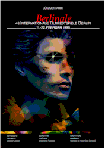

Contents | Features | Reviews | News | Archives | Store

Contents | Features | Reviews | News | Archives | Store
|  | 49th Berlin International |
Posted 26 February 1999
Berlin, Germany (February 21) -- Terrence Malick’s The Thin Red Line won the Golden Berlin Bear this afternoon as the 49th edition of the Berlin International Film Festival draws to a close. The awards will be given at the closing night screening at the Zoo Palast theater tonight, followed by a rare 70mm showing of Otto Preminger’s Porgy and Bess (he’s one of two retrospective subjects this year) and a party at the City Hall.
The Jury Grand Prize Silver Berlin Bear went to Denmark’s Mifune -- Dogma 3, Soren Kragh-Jacobsen’s film made in the dogma style of Lars Von Trier and Thomas Vinterberg’s The Celebration. The Silver Bear for Best Actress was split between Juliane Kohler and Maria Schrader for their performances as lesbian lovers in the Berlin-set World War II drama Aimee & Jaguar, while the Best Actor statuette went to Michael Gwisdek for his role in the German tragicomedy Night Shapes -- which is also set in Berlin.
Stephen Frears won the Best Director award for The Hi-Lo Country, while David Cronenberg earned a Jury prize for outstanding artistic achievement for eXistenZ. An outstanding single achievement bear went to Marc Norman and Tom Stoppard for Shakespeare in Love, and the traditional Alfred Bauer Prize for a film debut was awarded to France’s Thomas Vincent for Karnaval.
Against the backdrop of current political tensions involving Turkey and Greece, the Turkish-Dutch-German co-production Journey to the Sun won two prizes, the Blue Angel for best European film on a burning contemporary issue, and the privately funded Peace Film Prize.
Special Mention Awards were won by cinematographer John Toll (The Thin Red Line), Dutch actress Iben Hjejle (Mifune -- Dogma 3) and the subject matter of veteran French director Bertrand Tavernier’s It All Starts Today (crusading teacher in provincial town), which had been touted by some in the early days of the festival as a strong grand prize contender. Additionally, the Tavernier film was also voted the main prize from the Ecumenical Jury, whose only other competition section award went to Lea Pool’s well-received Set Me Free (a Canadian-Swiss-French co-production).
The Jury of the Guild of German Art House Cinemas gave their prize to Robert Altman’s Cookie’s Fortune, while the juried Reader’s Prize of the German newspaper Berliner Morgenpost selected Mifune -- Dogma 3 as the best film of the festival, with Shakespeare in Love and The Thin Red Line as the runners-up.
Among the many other awards and prizes announced, Gary Winick’s American musical drama The Tic Code and Maternal Love from Iran’s Kamal Tabrizi shared the best feature film Grand Prix in the Children’s Film Festival. The Tic Code also won the juried Crystal Bear award from the children’s program, while the pan-sectional Teddy award for best gay and lesbian feature anywhere in the festival went to Swedish director Lukas Moodysson’s Show Me Love (which is also known as F*cking Amal, after the small town in which it is set).
Although on the business side there were no spectacular deals inked (at least none that have been announced), this was generally considered to be a strong year for the competition section and a good, if not great year for just about everything else. And although it seemed to start slow, the festival went very quickly for most correspondents queried, as the sheer number of shows kept attendees running from theater to theater.
In the next and final report on the 1999 Berlin International Festival you’ll be able to read capsule reviews on films screened in the past fortnight, including some of the titles mentioned above.
Contents | Features | Reviews | News | Archives | Store
Copyright © 1999 by Nitrate Productions, Inc. All Rights Reserved.